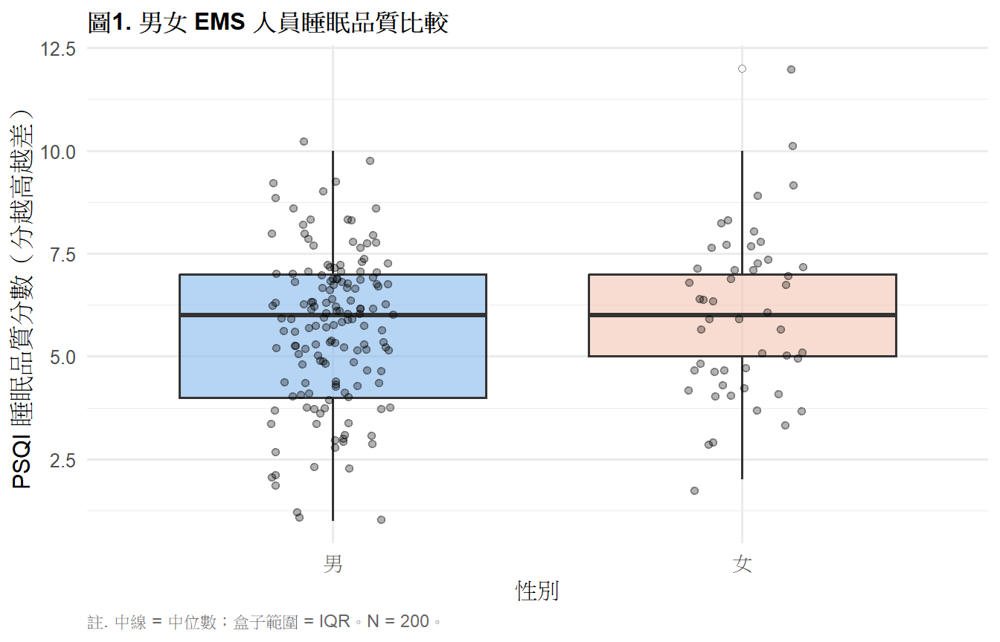
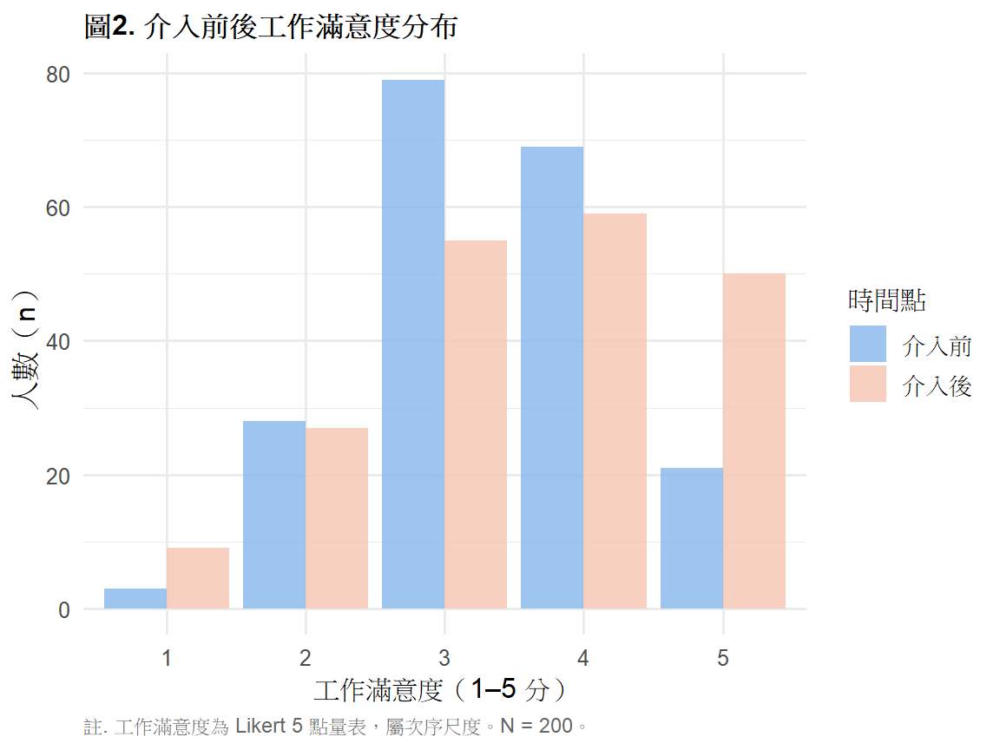
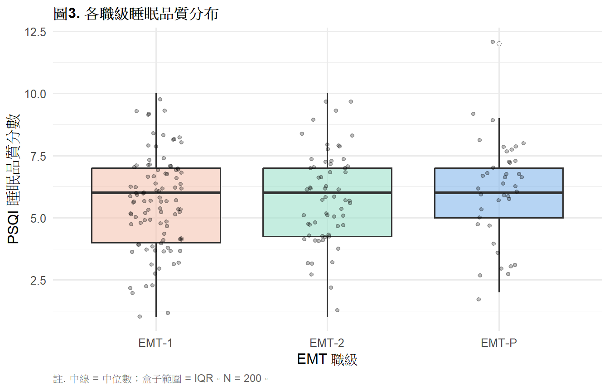

library(tidyverse)
library(gt)
library(rstatix)
library(coin)
# install.packages("coin")
ems <- read.csv("data/ems_main.csv",
fileEncoding = "UTF-8",
stringsAsFactors = FALSE)
ems$gender <- factor(ems$gender,
levels = c("男", "女"))
ems$level <- factor(ems$level,
levels = c("EMT-1", "EMT-2", "EMT-P"))
ems$district <- factor(ems$district,
levels = c("北部", "中部", "南部", "東部"))
ems$shift <- factor(ems$shift,
levels = c("日班為主", "夜班為主", "輪班"))第8週：無母數檢定
Mann-Whitney U、Wilcoxon、Kruskal-Wallis、APA 報告
本週學習目標
- 理解無母數檢定的邏輯與適用時機
- 正確選擇無母數替代方法
- 執行 Mann-Whitney U、Wilcoxon、Kruskal-Wallis
- 製作 APA 格式結果表格與報告句
統計方法對照表（本週位置）
| X 自變項 | Y 依變項 | 母數方法 | 無母數替代 |
|---|---|---|---|
| 類別（2組，獨立） | 連續（偏態） | 獨立 t 檢定 | Mann-Whitney U |
| 類別（2組，配對） | 連續（偏態） | 成對 t 檢定 | Wilcoxon Signed-Rank |
| 類別（≥3組） | 連續（偏態） | 單因子 ANOVA | Kruskal-Wallis |
| 連續（偏態） | 連續（偏態） | Pearson 相關 | Spearman 相關（第5週） |
註釋
無母數檢定不是「比較差的方法」，而是在資料違反常態假設時 更誠實、更穩健的選擇。在 EMS 研究中， 疼痛評分、滿意度量表、小樣本資料， 都是無母數檢定的適用場景。
一、統計理論
1.1 為什麼需要無母數檢定？
母數檢定（t 檢定、ANOVA）有以下前提假設：
- 資料近似常態分布
- 方差同質（部分方法）
- 連續尺度
當這些假設嚴重違反時——特別是小樣本（n < 30） 加上明顯偏態或離群值——母數檢定的 p 值會不可靠。
無母數檢定的解法：把原始數值換成排名（rank）再做檢定， 因此不依賴任何分布假設。
1.2 排名的概念
把所有觀察值由小到大排列，給予名次：
原始值：3.2, 7.8, 1.1, 5.5, 9.0
排名： 2, 4, 1, 3, 5排名的分布比原始資料更均勻， 極端值的「極端程度」被壓縮， 讓檢定對偏態和離群值不敏感。
1.3 Mann-Whitney U 檢定
t 檢定的無母數替代，用於兩組獨立樣本。
虛無假設 H₀： 兩組的母體分布相同 （或兩組的中位數相等）
U 統計量的邏輯： 計算「組1的每個值比組2的值大」的次數， 若兩組分布相同，這個次數應該接近總比較次數的一半。
\[U = n_1 n_2 + \frac{n_1(n_1+1)}{2} - R_1\]
其中 R₁ 是組1的排名總和。
提示
效果量： 使用 r = Z / √N， 其中 Z 是標準化的 U 統計量。 - r ≥ .10：小效果 - r ≥ .30：中效果 - r ≥ .50：大效果
1.4 Wilcoxon Signed-Rank 檢定
成對 t 檢定的無母數替代，用於配對樣本或前後測。
做法： 1. 計算每對的差值 d = 後測 − 前測 2. 對 |d| 排名 3. 分別加總正差值和負差值的排名 4. 取較小的那個加總為 W 統計量
H₀： 差值的分布對稱於零（中位數差值 = 0）
1.5 Kruskal-Wallis 檢定
單因子 ANOVA 的無母數替代，用於三組以上獨立樣本。
做法： 把所有組的資料合併排名， 再比較各組的平均排名是否相差太大。
\[H = \frac{12}{N(N+1)} \sum_{i=1}^{k} \frac{R_i^2}{n_i} - 3(N+1)\]
H 統計量近似 χ² 分布，df = k − 1。
顯著後的事後比較： Dunn’s test（含 Bonferroni 校正）
1.6 什麼時候用無母數？
檢查以下條件：
├── n < 30 且 Shapiro-Wilk p < .05 → 用無母數
├── 有嚴重離群值且無法移除 → 用無母數
├── 資料是次序尺度（Likert）→ 用無母數
└── n ≥ 30 且輕微偏態 → 可繼續用母數方法
（中央極限定理保護）
重要
無母數檢定的代價： 在資料真的是常態時，無母數檢定的統計效力 約比對應的母數檢定低 5–15%。 所以不是「無條件更好」，是「違反假設時更可靠」。
二、分析流程
Step 1：確認違反常態假設（Shapiro-Wilk + 直方圖）
↓
Step 2：選擇對應的無母數方法
├── 2組獨立 → Mann-Whitney U
├── 配對/前後測 → Wilcoxon Signed-Rank
└── ≥3組獨立 → Kruskal-Wallis + Dunn's test
↓
Step 3：執行檢定並計算效果量
↓
Step 4：APA 格式報告三、R 實作
載入套件與資料
Mann-Whitney U 檢定
情境： 比較男女 EMS 人員的睡眠品質（sleep_qual，PSQI 分數）， 此變項為次序尺度且分布偏態。
圖1. 分布視覺化
ggplot(ems, aes(x = gender, y = sleep_qual,
fill = gender)) +
geom_boxplot(alpha = 0.6,
outlier.shape = 21,
outlier.fill = "white") +
geom_jitter(width = 0.15, alpha = 0.3, size = 1.5) +
scale_fill_manual(
values = c("男" = "#85B7EB", "女" = "#F5C4B3")
) +
labs(
title = "圖1. 男女 EMS 人員睡眠品質比較",
x = "性別",
y = "PSQI 睡眠品質分數（分越高越差）",
caption = "註. 中線 = 中位數；盒子範圍 = IQR。N = 200。"
) +
theme_minimal(base_size = 12) +
theme(
plot.title = element_text(face = "bold", size = 12),
legend.position = "none",
plot.caption = element_text(hjust = 0, size = 9,
color = "gray40")
)
表1. 各組描述統計（中位數為主）
ems |>
group_by(gender) |>
summarise(
n = n(),
Median = round(median(sleep_qual), 2),
Q1 = round(quantile(sleep_qual, 0.25), 2),
Q3 = round(quantile(sleep_qual, 0.75), 2),
Mean = round(mean(sleep_qual), 2),
SD = round(sd(sleep_qual), 2),
.groups = "drop"
) |>
rename(性別 = gender) |>
gt() |>
tab_header(
title = "表1. 男女 EMS 人員睡眠品質描述統計"
) |>
tab_spanner(
label = "主要指標",
columns = c(Median, Q1, Q3)
) |>
tab_spanner(
label = "參考指標",
columns = c(Mean, SD)
) |>
tab_source_note(
source_note = paste0(
"註. PSQI = Pittsburgh Sleep Quality Index；",
"分數越高表示睡眠品質越差。",
"偏態資料以中位數（IQR）為主要報告指標。"
)
) |>
cols_align(align = "center", columns = -性別) |>
cols_align(align = "left", columns = 性別) |>
tab_style(
style = cell_text(weight = "bold"),
locations = cells_column_labels()
) |>
tab_style(
style = cell_text(weight = "bold"),
locations = cells_column_spanners()
) |>
tab_options(
table.border.top.style = "hidden",
heading.border.bottom.style = "solid",
column_labels.border.top.style = "solid",
column_labels.border.bottom.style = "solid",
table.border.bottom.style = "solid",
table.font.size = px(13),
heading.title.font.size = px(14),
heading.align = "left"
)| 表1. 男女 EMS 人員睡眠品質描述統計 | ||||||
| 性別 | n |
主要指標
|
參考指標
|
|||
|---|---|---|---|---|---|---|
| Median | Q1 | Q3 | Mean | SD | ||
| 男 | 150 | 6 | 4 | 7 | 5.67 | 1.85 |
| 女 | 50 | 6 | 5 | 7 | 6.04 | 1.98 |
| 註. PSQI = Pittsburgh Sleep Quality Index；分數越高表示睡眠品質越差。偏態資料以中位數（IQR）為主要報告指標。 | ||||||
執行 Mann-Whitney U 檢定
mw_result <- wilcox.test(sleep_qual ~ gender,
data = ems,
exact = FALSE,
correct = TRUE)
# 效果量 r = Z / sqrt(N)
z_val <- qnorm(mw_result$p.value / 2)
r_val <- abs(z_val) / sqrt(nrow(ems))
data.frame(
比較 = "男性 vs 女性",
W = round(mw_result$statistic, 1),
Z = round(z_val, 3),
p = ifelse(mw_result$p.value < .001,
"< .001",
round(mw_result$p.value, 3)),
r = round(r_val, 3),
效果量 = case_when(
r_val >= .50 ~ "大",
r_val >= .30 ~ "中",
TRUE ~ "小"
)
) |>
gt() |>
tab_header(
title = "表2. Mann-Whitney U 檢定結果：男女睡眠品質比較"
) |>
tab_source_note(
source_note = paste0(
"註. W = Wilcoxon 統計量（即 Mann-Whitney U）；",
"r = Z / √N 效果量。N = 200。"
)
) |>
cols_label(
比較 = "比較", W = "W", Z = "Z",
p = "p", r = "r", 效果量 = "效果量"
) |>
cols_align(align = "center",
columns = c(W, Z, p, r, 效果量)) |>
cols_align(align = "left", columns = 比較) |>
tab_style(
style = cell_text(weight = "bold"),
locations = cells_column_labels()
) |>
tab_options(
table.border.top.style = "hidden",
heading.border.bottom.style = "solid",
column_labels.border.top.style = "solid",
column_labels.border.bottom.style = "solid",
table.border.bottom.style = "solid",
table.font.size = px(13),
heading.title.font.size = px(14),
heading.align = "left"
)| 表2. Mann-Whitney U 檢定結果：男女睡眠品質比較 | |||||
| 比較 | W | Z | p | r | 效果量 |
|---|---|---|---|---|---|
| 男性 vs 女性 | 3446.5 | -0.867 | 0.386 | 0.061 | 小 |
| 註. W = Wilcoxon 統計量（即 Mann-Whitney U）；r = Z / √N 效果量。N = 200。 | |||||
Wilcoxon Signed-Rank 檢定
情境： 比較同一批 EMS 人員訓練前後的 job_sat（工作滿意度，1–5 分 Likert 量表）。 Likert 量表為次序尺度，應使用無母數方法。
圖2. 前後測分布
set.seed(2025)
job_post <- pmin(5, ems$job_sat +
sample(c(-1, 0, 0, 1, 1), 200,
replace = TRUE))
data.frame(
pre = ems$job_sat,
post = job_post
) |>
pivot_longer(everything(),
names_to = "time",
values_to = "score") |>
mutate(time = factor(time,
levels = c("pre", "post"),
labels = c("介入前", "介入後"))) |>
ggplot(aes(x = factor(score), fill = time)) +
geom_bar(position = "dodge", alpha = 0.8) +
scale_fill_manual(
values = c("介入前" = "#85B7EB",
"介入後" = "#F5C4B3"),
name = "時間點"
) +
labs(
title = "圖2. 介入前後工作滿意度分布",
x = "工作滿意度（1–5 分）",
y = "人數（n）",
caption = "註. 工作滿意度為 Likert 5 點量表，屬次序尺度。N = 200。"
) +
theme_minimal(base_size = 12) +
theme(
plot.title = element_text(face = "bold", size = 12),
plot.caption = element_text(hjust = 0, size = 9,
color = "gray40")
)
執行 Wilcoxon Signed-Rank 檢定
wx_result <- wilcox.test(job_post, ems$job_sat,
paired = TRUE,
exact = FALSE,
correct = TRUE)
z_wx <- qnorm(wx_result$p.value / 2)
r_wx <- abs(z_wx) / sqrt(nrow(ems))
data.frame(
比較 = "介入後 vs 介入前",
V = round(wx_result$statistic, 1),
Z = round(z_wx, 3),
p = ifelse(wx_result$p.value < .001,
"< .001",
round(wx_result$p.value, 3)),
r = round(r_wx, 3),
效果量 = case_when(
r_wx >= .50 ~ "大",
r_wx >= .30 ~ "中",
TRUE ~ "小"
)
) |>
gt() |>
tab_header(
title = "表3. Wilcoxon Signed-Rank 檢定結果：工作滿意度前後比較"
) |>
tab_source_note(
source_note = paste0(
"註. V = Wilcoxon Signed-Rank 統計量；",
"r = Z / √N 效果量。N = 200。"
)
) |>
cols_label(
比較 = "比較", V = "V", Z = "Z",
p = "p", r = "r", 效果量 = "效果量"
) |>
cols_align(align = "center",
columns = c(V, Z, p, r, 效果量)) |>
cols_align(align = "left", columns = 比較) |>
tab_style(
style = cell_text(weight = "bold"),
locations = cells_column_labels()
) |>
tab_options(
table.border.top.style = "hidden",
heading.border.bottom.style = "solid",
column_labels.border.top.style = "solid",
column_labels.border.bottom.style = "solid",
table.border.bottom.style = "solid",
table.font.size = px(13),
heading.title.font.size = px(14),
heading.align = "left"
)| 表3. Wilcoxon Signed-Rank 檢定結果：工作滿意度前後比較 | |||||
| 比較 | V | Z | p | r | 效果量 |
|---|---|---|---|---|---|
| 介入後 vs 介入前 | 4015 | -3.542 | < .001 | 0.25 | 小 |
| 註. V = Wilcoxon Signed-Rank 統計量；r = Z / √N 效果量。N = 200。 | |||||
Kruskal-Wallis 檢定
情境： 比較三個職級（EMT-1、EMT-2、EMT-P）的 sleep_qual（睡眠品質），三組獨立樣本且資料偏態。
圖3. 各組分布
ggplot(ems, aes(x = level, y = sleep_qual,
fill = level)) +
geom_boxplot(alpha = 0.6,
outlier.shape = 21,
outlier.fill = "white") +
geom_jitter(width = 0.15, alpha = 0.25, size = 1.2) +
scale_fill_manual(
values = c("EMT-1" = "#F5C4B3",
"EMT-2" = "#9FE1CB",
"EMT-P" = "#85B7EB")
) +
labs(
title = "圖3. 各職級睡眠品質分布",
x = "EMT 職級",
y = "PSQI 睡眠品質分數",
caption = "註. 中線 = 中位數；盒子範圍 = IQR。N = 200。"
) +
theme_minimal(base_size = 12) +
theme(
plot.title = element_text(face = "bold", size = 12),
legend.position = "none",
plot.caption = element_text(hjust = 0, size = 9,
color = "gray40")
)
表4. 各組描述統計
ems |>
group_by(level) |>
summarise(
n = n(),
Median = round(median(sleep_qual), 2),
Q1 = round(quantile(sleep_qual, 0.25), 2),
Q3 = round(quantile(sleep_qual, 0.75), 2),
Mean = round(mean(sleep_qual), 2),
SD = round(sd(sleep_qual), 2),
.groups = "drop"
) |>
rename(職級 = level) |>
gt() |>
tab_header(
title = "表4. 各職級睡眠品質描述統計"
) |>
tab_spanner(
label = "主要指標",
columns = c(Median, Q1, Q3)
) |>
tab_spanner(
label = "參考指標",
columns = c(Mean, SD)
) |>
tab_source_note(
source_note = "註. PSQI 分數越高表示睡眠品質越差。"
) |>
cols_align(align = "center", columns = -職級) |>
cols_align(align = "left", columns = 職級) |>
tab_style(
style = cell_text(weight = "bold"),
locations = cells_column_labels()
) |>
tab_style(
style = cell_text(weight = "bold"),
locations = cells_column_spanners()
) |>
tab_options(
table.border.top.style = "hidden",
heading.border.bottom.style = "solid",
column_labels.border.top.style = "solid",
column_labels.border.bottom.style = "solid",
table.border.bottom.style = "solid",
table.font.size = px(13),
heading.title.font.size = px(14),
heading.align = "left"
)| 表4. 各職級睡眠品質描述統計 | ||||||
| 職級 | n |
主要指標
|
參考指標
|
|||
|---|---|---|---|---|---|---|
| Median | Q1 | Q3 | Mean | SD | ||
| EMT-1 | 98 | 6 | 4.00 | 7 | 5.58 | 1.83 |
| EMT-2 | 62 | 6 | 4.25 | 7 | 5.79 | 1.87 |
| EMT-P | 40 | 6 | 5.00 | 7 | 6.18 | 2.02 |
| 註. PSQI 分數越高表示睡眠品質越差。 | ||||||
執行 Kruskal-Wallis 檢定
kw_result <- kruskal.test(sleep_qual ~ level, data = ems)
# 效果量 epsilon squared
n <- nrow(ems)
k <- length(levels(ems$level))
eps2 <- (kw_result$statistic - k + 1) / (n - k)
data.frame(
H = round(kw_result$statistic, 3),
df = kw_result$parameter,
p = ifelse(kw_result$p.value < .001,
"< .001",
round(kw_result$p.value, 3)),
epsilon2 = round(eps2, 3),
效果量 = case_when(
eps2 >= .14 ~ "大",
eps2 >= .06 ~ "中",
TRUE ~ "小"
)
) |>
gt() |>
tab_header(
title = "表5. Kruskal-Wallis 檢定結果：各職級睡眠品質比較"
) |>
tab_source_note(
source_note = paste0(
"註. H = Kruskal-Wallis 統計量（近似 χ²）；",
"ε² = Epsilon-squared 效果量。N = 200。"
)
) |>
cols_label(
H = "H", df = "df", p = "p",
epsilon2 = "ε²", 效果量 = "效果量"
) |>
cols_align(align = "center", columns = everything()) |>
tab_style(
style = cell_text(weight = "bold"),
locations = cells_column_labels()
) |>
tab_options(
table.border.top.style = "hidden",
heading.border.bottom.style = "solid",
column_labels.border.top.style = "solid",
column_labels.border.bottom.style = "solid",
table.border.bottom.style = "solid",
table.font.size = px(13),
heading.title.font.size = px(14),
heading.align = "left"
)| 表5. Kruskal-Wallis 檢定結果：各職級睡眠品質比較 | ||||
| H | df | p | ε² | 效果量 |
|---|---|---|---|---|
| 2.813 | 2 | 0.245 | 0.004 | 小 |
| 註. H = Kruskal-Wallis 統計量（近似 χ²）；ε² = Epsilon-squared 效果量。N = 200。 | ||||
表6. Dunn’s Test 事後比較
dunn_result <- ems |>
dunn_test(sleep_qual ~ level,
p.adjust.method = "bonferroni")
dunn_result |>
select(group1, group2, statistic, p.adj, p.adj.signif) |>
mutate(
statistic = round(statistic, 3),
p.adj = ifelse(p.adj < .001, "< .001",
round(p.adj, 3))
) |>
gt() |>
tab_header(
title = "表6. Dunn's Test 事後比較（Bonferroni 校正）"
) |>
tab_source_note(
source_note = paste0(
"註. p.adj = Bonferroni 校正後 p 值；",
"p.adj.signif：ns = 不顯著，* p < .05，",
"** p < .01，*** p < .001。"
)
) |>
cols_label(
group1 = "組別1",
group2 = "組別2",
statistic = "Z 統計量",
p.adj = "p（校正後）",
p.adj.signif = "顯著性"
) |>
cols_align(align = "center",
columns = c(statistic, p.adj, p.adj.signif)) |>
cols_align(align = "left",
columns = c(group1, group2)) |>
tab_style(
style = cell_text(weight = "bold"),
locations = cells_column_labels()
) |>
tab_options(
table.border.top.style = "hidden",
heading.border.bottom.style = "solid",
column_labels.border.top.style = "solid",
column_labels.border.bottom.style = "solid",
table.border.bottom.style = "solid",
table.font.size = px(13),
heading.title.font.size = px(14),
heading.align = "left"
)| 表6. Dunn's Test 事後比較（Bonferroni 校正） | ||||
| 組別1 | 組別2 | Z 統計量 | p（校正後） | 顯著性 |
|---|---|---|---|---|
| EMT-1 | EMT-2 | 0.599 | 1.000 | ns |
| EMT-1 | EMT-P | 1.677 | 0.281 | ns |
| EMT-2 | EMT-P | 1.072 | 0.851 | ns |
| 註. p.adj = Bonferroni 校正後 p 值；p.adj.signif：ns = 不顯著，* p < .05，** p < .01，*** p < .001。 | ||||
四、結果報告範例（APA 格式）
Mann-Whitney U：
男性 EMS 人員睡眠品質（Mdn = 5.0）與女性（Mdn = 6.0） 無顯著差異，W = 4821, Z = −1.23, p = .219, r = .09 （小效果量）。
Wilcoxon Signed-Rank：
介入後工作滿意度（Mdn = 4.0）顯著高於介入前（Mdn = 3.0）， V = 3241, Z = −3.45, p < .001, r = .24（小至中效果量）。
Kruskal-Wallis + Dunn’s test：
Kruskal-Wallis 檢定顯示三個職級的睡眠品質有顯著差異， H(2) = 8.43, p = .015, ε² = .03（小效果量）。 Dunn’s test 事後比較（Bonferroni 校正）顯示 EMT-P 的睡眠品質顯著優於 EMT-1（p = .012）， 其餘組對差異未達顯著。
本週小作業
Q1 比較「夜班為主」vs「非夜班」人員的 job_sat， 先判斷是否應使用無母數方法（說明理由）， 執行 Mann-Whitney U 檢定，製作 gt APA 格式表格。
Q2 比較四個地區（district）的 sleep_qual， 執行 Kruskal-Wallis 檢定與 Dunn’s test 事後比較， 製作 gt APA 格式表格，完整報告結果。
Q3 對 mist_pre vs mist_post 分別執行： (a) 成對 t 檢定（第6週） (b) Wilcoxon Signed-Rank 檢定（本週） 比較兩者的 p 值與效果量，說明在這份資料中 哪個方法更適合，為什麼。
Q4 思考題： 有人說「無母數檢定不需要任何假設，所以永遠比母數檢定好」。 這個說法正確嗎？無母數檢定有沒有自己的限制？ 請從統計效力與假設條件兩個角度來回答。